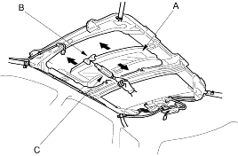
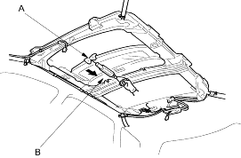

- Remove the headliner (see page 20-210).
- Closing force check:
- With a shop towel (A) on the leading edge of the glass (B), attach a spring scale (C) as shown.
- Have an assistant hold the switch to close the glass while you measure the force required to stop it.
- Read the force as soon as the glass stops moving, then immediately release the switch and spring scale.
Closing Force: 200 - 290 N (20 - 30 kgf, 44 - 66 lbf)

- If the force in not within specification, remove the sunroof motor (see page 20-198), then check:
- The gear portion and the inner cable for breakage and damage. If the gear portion is broken, replace the motor. If the inner cable is damaged, remove the frame (see page 20-199) and replace the cable assembly (see page 20-201).
- The sunroof motor (see page 20-198). If the motor fails to run or does not turn smoothly, replace it.
- The opening drag. Go to step 4.
- Opening drag check: Protect the leading edge of the glass with a shop towel (A). Measure the effort required to open the glass using a spring scale (B) as shown.

- If the load is over 40 N (4 kgf, 9 lbf), check:
- The side clearance and glass height adjustment (see page 20-194).
- For broken or damaged sliding parts. If any sliding parts are damaged, replace them.